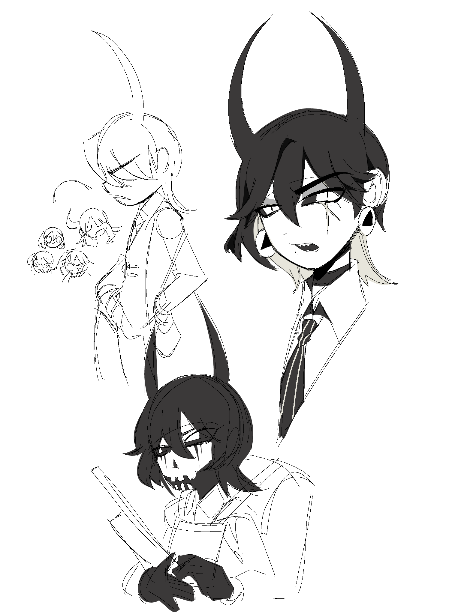
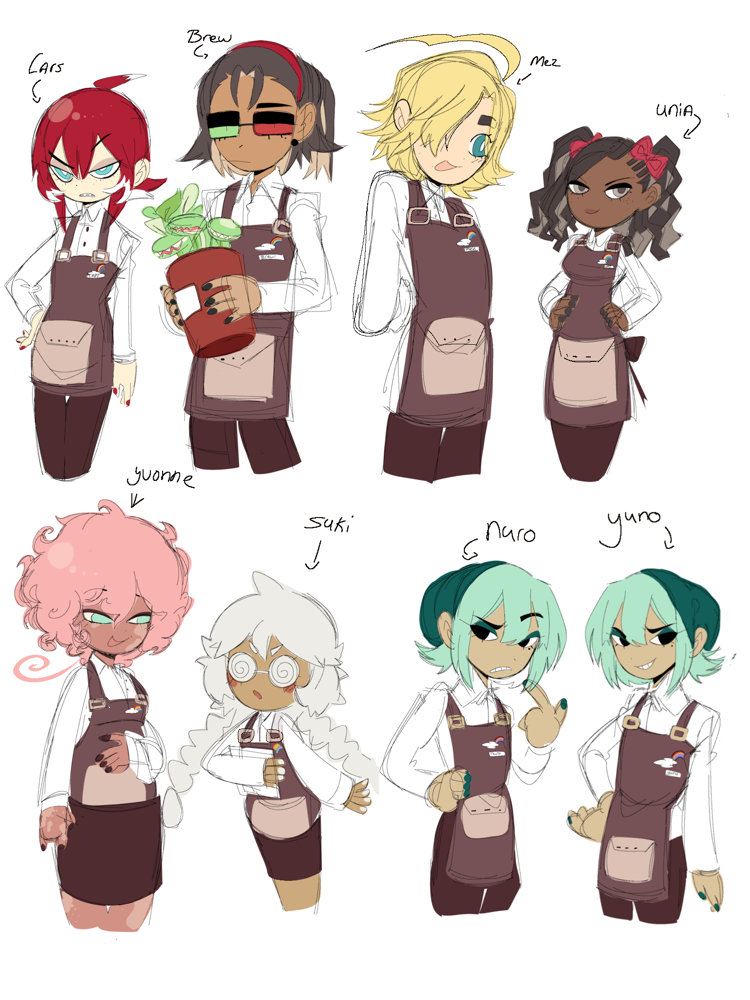
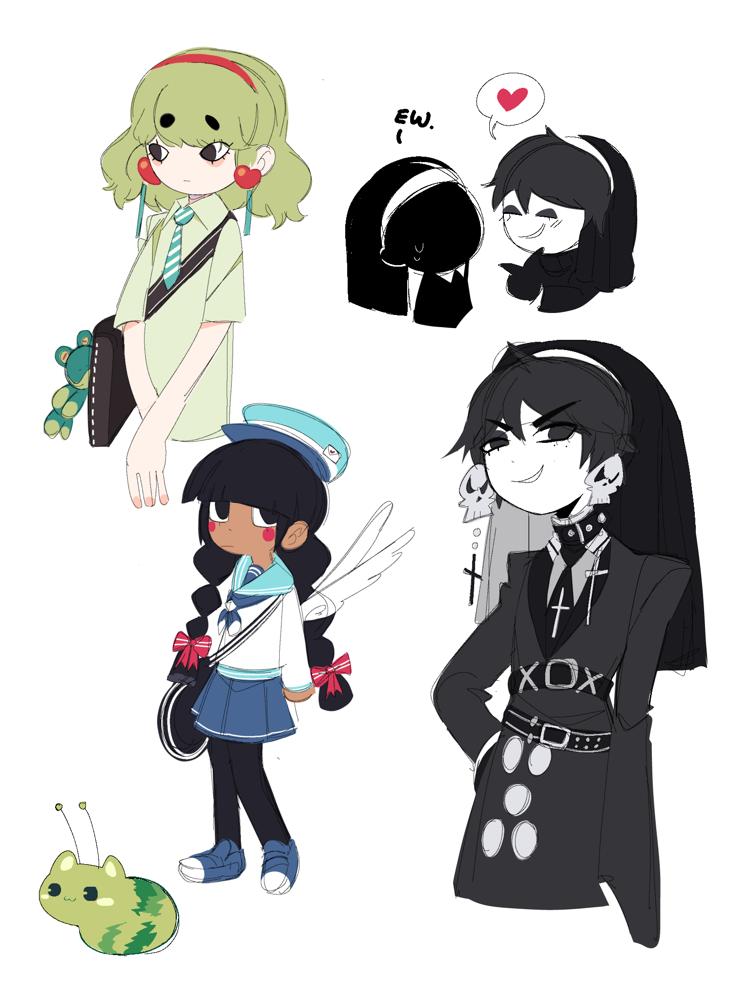

Go back
Go back 
 5#
5# 
Updating web gets a lil bit harder during exam periods, quite nervous, some chaarcter designs and redesigns
Getting better with drawing on pc


4#
- Had a problem with updating the website everytime since i wasnt sure when to update i decided to bring back the time dates it will now be every wednesday and saturdays
After my big exam i ofcourse will start planning my game productions right now im writing plans and doing reserach, but i gottah focus on school aswell first even tho i rather prefer to draw haha
Bought a new proper pc, no mouse tho, practicing with drawing on it. getting better hopefully
2#
Childhood frend

1#
Fresh start section, the
archive is still acessible under in the buttons, every year i will try to make an archive
With that said started working on the bobashop crew in Pechis town. their still in concept!
1#

Here i had a problem with drawing my characters back that i wasnt sure if i was still intrested in so i redesigned them to put them up in my intrest

Then ofcourse some character design concepts
